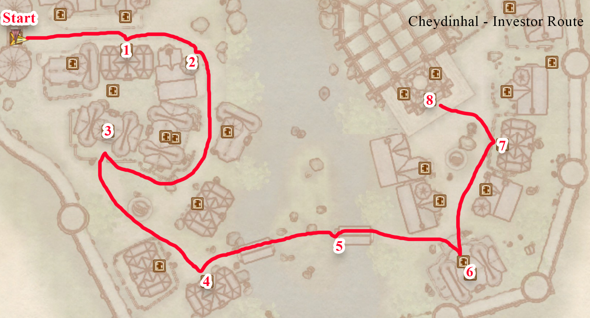
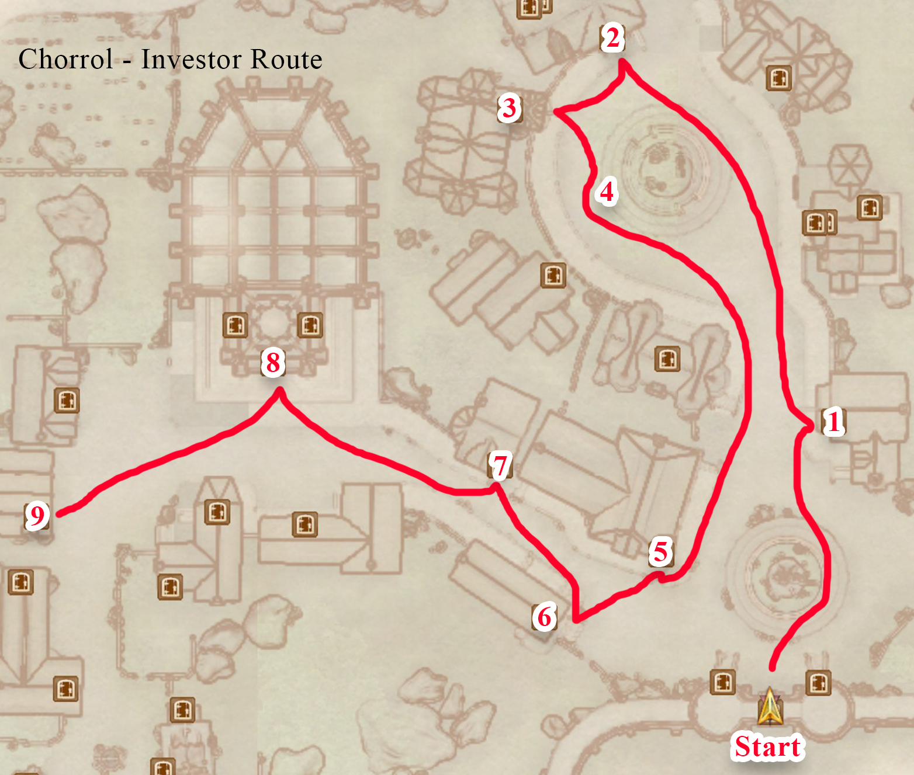
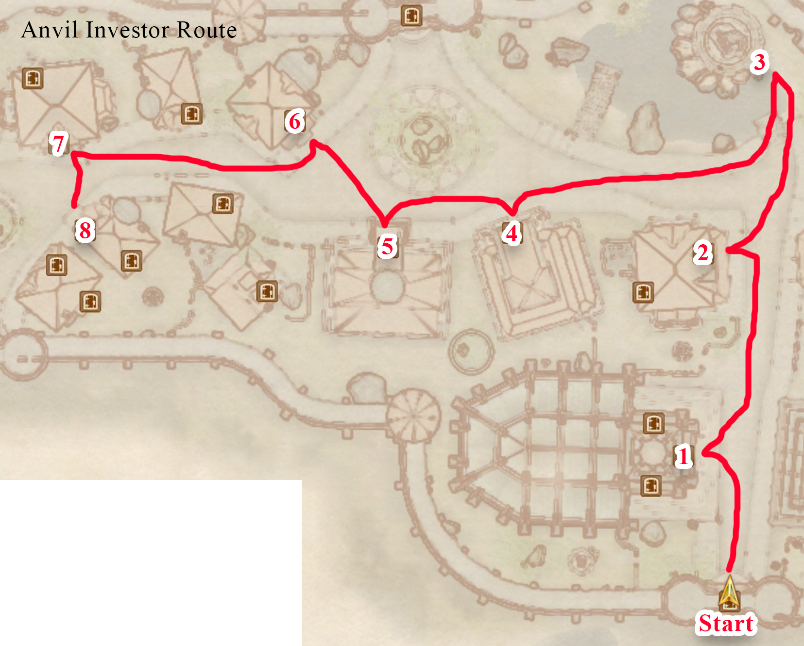
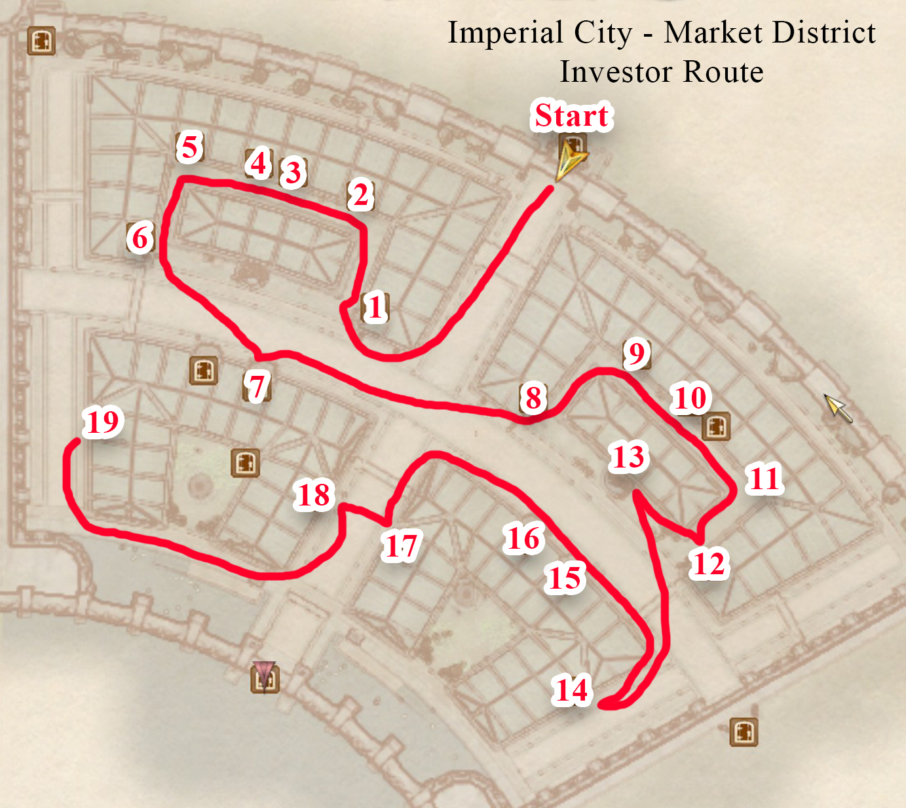
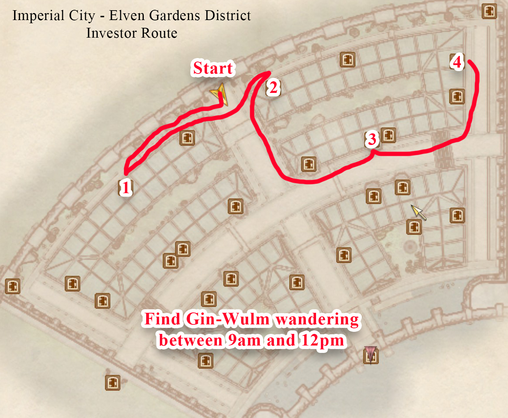
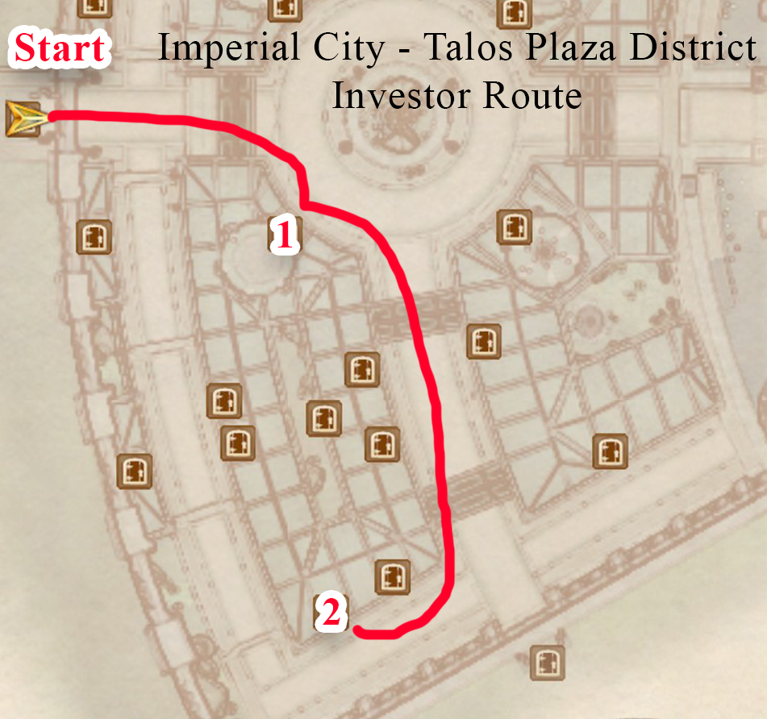
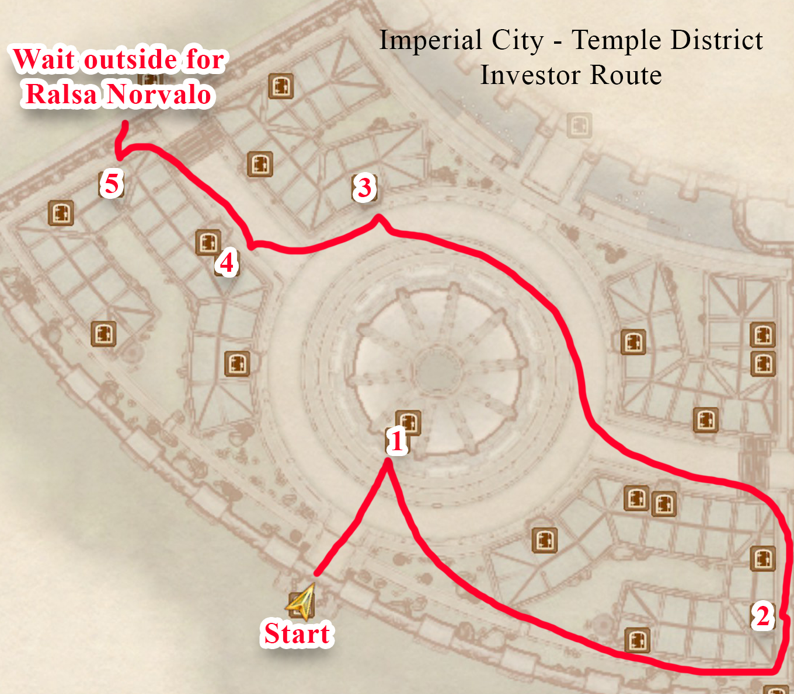
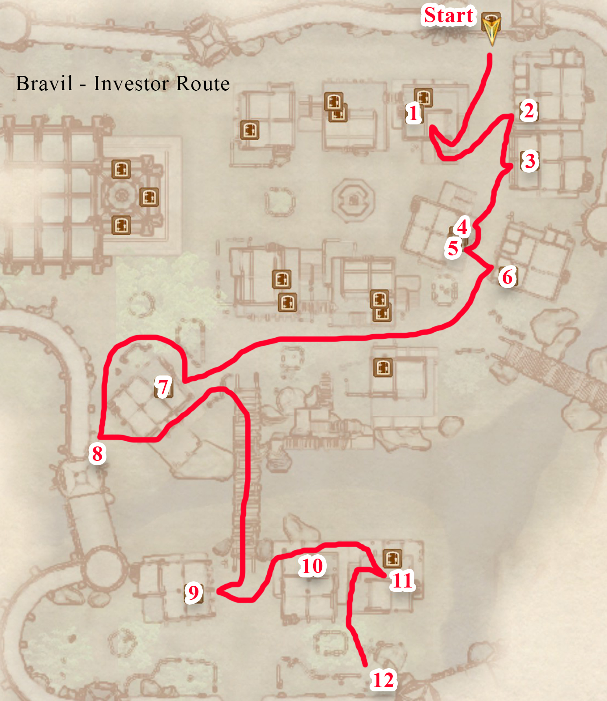
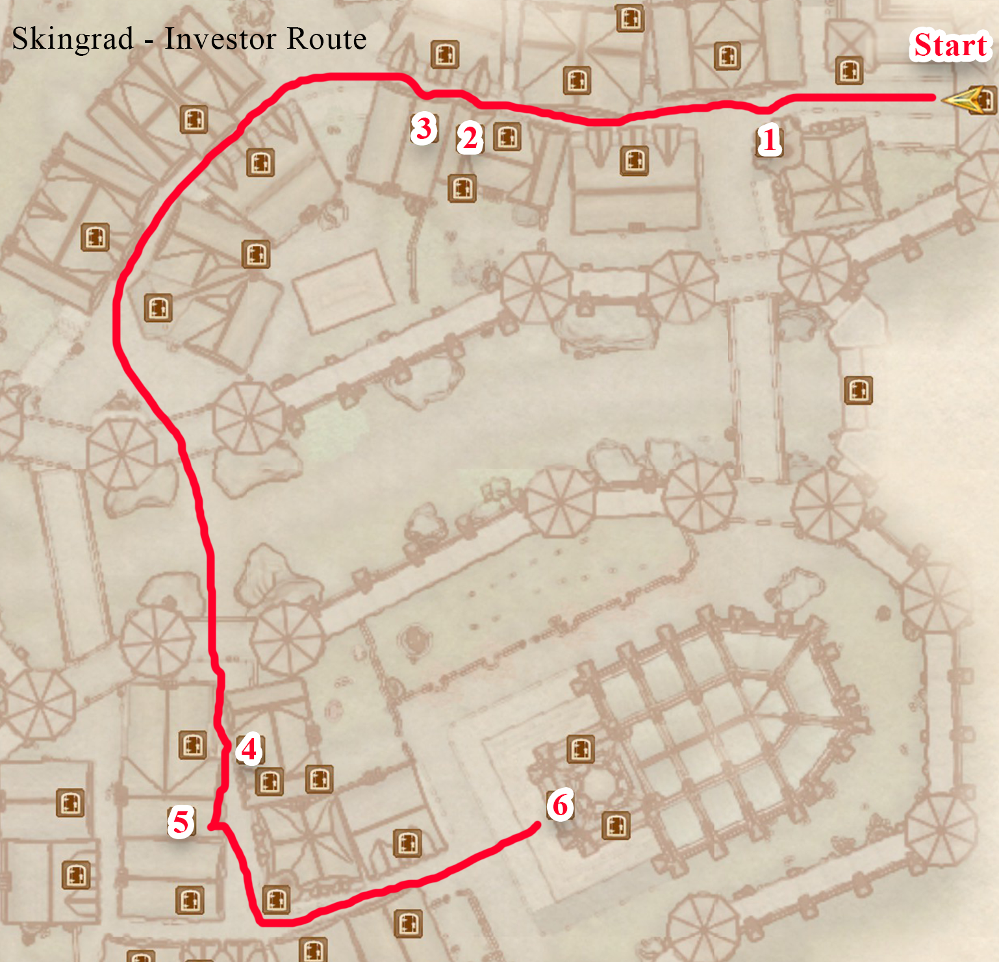
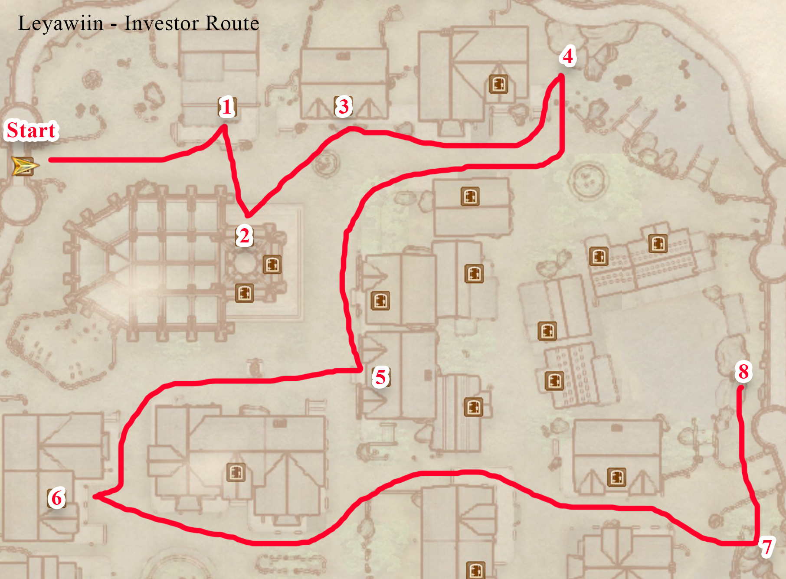

Oblivion 100% Speedrun Route (V3)
Made by Ben Songster (MeemawHustlin) with help from the PRCLive community.
Pregame
- Enter the console commands “sdt 12” and “tdt” before the run starts, and make sure your wait timer is set to 1 hour. If the game crashes at any point, enter the “sdt 12” and “tdt” console commands again.
- Move the difficulty slider to the easiest setting (all the way left)
- Make your character a Male Redguard.
- Time starts as soon as you click "Continue" on the first tutorial box that appears. You are not allowed to move before that happens.
Tutorial
- Click continue on the quest pop-up to start the run. Press caps lock to always be sprinting, and press F3 to bring up the spell menu.
- Hotkey Flare and equip Adrenaline Rush.
- Cast Adrenaline Rush and Save Clip through the right front edge of the NE archway.
- When you clip through the wall, run to the east until you spawn back in bounds. This is called Void Warping. If the clip doesn’t work, try setting the quicksave up again and loading again.
- Jump up into the east archway and Save Clip through the seam between the two walls. Continue to run east after you clip until the black box is off the top of the screen, then wait until you Void Warp.
- Take the Chameleon and Flash Bolt scrolls, as well as the lockpicks and Iron Key off the Goblin corpse. Make a save. Make sure to write down the number of the save. It will be referred to as PermaKey_Save later.
- Open the door so that the popup shows up about using the Iron Key, and press escape to load the PermaKey_Save you just made. This glitches the game into allowing you to open most doors without needing to pick the lock.
- Continue linearly until you get past the square room with eight pillars. Pick up the Tomato, Cheese, and Rusty Iron Shield in the center of these pillars. Then hug the right wall to find a chest just past the next area with the light shafts. Take the Potions of Healing and Weak Potion of Sorcery from it.
- Continue linearly to the next area with a goblin. Take the Novice Mortar and Pestle from on top of the broken crate.
- Continue to the main large area with several goblins. Take the Repair Hammer and 18 gold from the locked chest by the Goblin Shaman.
- Continue until you get to the Imperial Subterrane. Fall down and use Flare to kill the Mythic Dawn Agent up on the SW ledge.
- Head SE and punch the Emperor six times to make them chase you. Run back to the door in the main area and yield when Glenroy is close enough to you.
- Kill the Mythic Dawn Agent when the door opens, then wait for the next door to open and kill the other Mythic Dawn Agents that appear.
- Run up to the Emperor and wait for him to talk to you.
a. Advance predetermined dialogue. b. Select The Steed as your birthsign. c. Advance all predetermined dialogue.
- Talk to Baurus, who will give you a torch.
- Use your hotkey to equip Flare again. Hit the Emperor once to get them to chase you, then run ahead and kill any Mythic Dawn Agents on your way. Yield to the Emperor when you are by the door to the next area.
- Make sure Baurus spawns in the next area when you go through the door. If he doesn’t you may need to go back through the door and enter the zone again.
- In the next area, hug the right wall and jump to the ledge across the gap. Save Clip facing west through the door. As soon as you clip through, curve around to the left and run SE until you Void Warp.
- Head SE down the hall and Flare the Mythic Dawn Agent.
- Head back and go through the Iron Gate and talk to Baurus.
- Advance predetermined dialogue.
- Make a custom class with the following: i. Specialization: Magic ii. Favored Attributes: Strength and Speed iii. Major skills: Acrobatics, Alteration, Conjuration, Destruction, Illusion, Mysticism, and Restoration
- Advance predetermined dialogue.
- Continue linearly through the rest of the tutorial, going back through the Iron Gate you opened.
- When you exit the sewer, change your race to a Female High Elf.
- tutorial is now complete.
Imperial City Market District
- Fast travel to the Imperial City Market District and head WSW into the first archway, then hug the right wall until you find the Mystic Emporium.
- Wait until 8am, then talk to Calindil.
- Haggle to 50% sell value, then sell the Chameleon and Flash Bolt scrolls. Buy 2 of any Absorb scroll that costs 14 or less, and 1 of another Absorb scroll of the same or less cost.
- Dupe the 1 stack using the 2 stack, pick one up, then repeat and pick up all scrolls so that you have 3 of one scroll and 2 of another. Now, dupe the stacks back and forth until you have 512 of one and 768 of another.
- From the 768 stack, sell 200, 200, then 68 scrolls back to Calindil. From the 512 stack, sell 200, 200, then 62 scrolls. You should have 300 of one type, and 50 of another, as well as over 4,300 gold at the end.
- Read The Black Arts on Trial [Mysticism] skill book on the counter.
- Head SE to Red Diamond Jewelry. Talk to Hamlof and buy the Brass Ring. Dupe about 300 lockpicks.
Mages Guild Pt. 1
Bravil Recommendation
- Fast travel to Bravil.
- Wait until 1am and head between the first two buildings on the left to buy 1 Skooma from Nordinor.
- Drop the Skooma and pick it back up. Dupe the Skooma with the 50 scroll stack, and then the 300 scroll stack. Hotkey Skooma.
Use the following method to increase your movement speed everywhere you go:
How to Drink Extra Skooma:
1. Drink 4 Skooma using the hotkey.
2. Go into the inventory and drink 4 more Skooma.
Be careful not to lose much of your fatigue bar when farming Acrobatics. If you pass out, wait an hour. - Head SW towards the Mages Guild. Stop at the Chapel on your way.
- In the Chapel Hall downstairs, read 2920, Rain’s Hand (v4) [Restoration] on the left shelf, and take the Nirnroot from the south room.
- Go to the Mages Guild, wait until 9am, and talk to Kud-Ei.
- Dialogue: Join the Mages Guild.
- Dialogue: Yes, I want to join the guild. (This starts Join the Mages Guild)
- Dialogue: Recommendation.
- Dialogue: I’m ready.
- Dialogue: Varon Vamori.
- Dialogue: Mage’s Staff.
- Activate this quest in your journal.
- Follow Quest Marker to talk to Varon Vamori.
- Bribe to 65+ disposition.
- Dialogue: Ardaline.
- Dialogue: Mage’s Staff.
- Buy Spark from Delphine Jend.
- Take at least 4 Cheap Wine near the east corner of the ground floor.
- Take the Lesser Soul Gem from the SW bookshelf behind the back counter.
- Fast travel to Imperial City Talos Plaza District.
- Head NE, second door on the right to get to Soris Arenim’s House.
- Talk to Soris Arenim.
- Bribe to 70+ disposition.
- Dialogue: Mage’s Staff.
- Dialogue: It’s a deal.
- Fast travel to Quest Marker to talk to Kud-Ei.
- Dialogue: Mage’s Staff.
- [quest] Bravil Mages Guild is now complete.
Anvil Recommendation
- Fast travel to Anvil Main Gate.
- Head south to the Mages Guild and talk to Carahil.
- Dialogue: Recommendation.
- Dialogue: Yes, I’m ready.
- Dialogue: Go on.
- Fast travel to Horse Whisperer Stables and make your way to the Quest Marker to talk to Arielle Jurard.
- Follow Quest Marker to talk to Christophe Marane.
- Dialogue: Bed.
- Dialogue: I’m a merchant.
- Dialogue: I’ll take it.
- You will automatically be approached by Caminalda.
- Dialogue: Yes, that’s right.
- Go upstairs to your bed and wait 1 hour. Arielle Jurard will appear. Talk to her.
- Sleep in the bed for 1 hour.
- Heads towards the Quest Marker until Caminalda approaches you.
- Kill Caminalda and fast travel to Quest Marker to talk to Carahil.
- Dialogue: Rogue Mage.
- [quest] Anvil Mages Guild is now complete.
- Retrieve the Dragon’s Tongue and Nightshade in the upstairs library. The ingredients are on a table through the door in the NW corner of the library.
Cheydinhal Recommendation
- Fast travel to Cheydinhal West Gate.
- Head SE around the back of the first building to enter the well.
- If this door does not open, load the PermaKey_Save and do the Perma Key glitch.
- Get the Nirnroot at the south end of the well.
- On the west end of the well, take the Ring of Burden off of Vidkun’s corpse.
- Exit the well and go around to the front of the south building to enter the Mages Guild.
- Head east down into the basement.
- Read The Firsthold Revolt [Mysticism] on the bookshelf next to the crystal ball at the bottom of the stairs.
- Head west and open the locked door, then open the locked drawers and take the Black Soul Gems.
- If this door does not open, load the PermaKey_Save and do the Perma Key glitch.
- Talk to Falcar. He may be anywhere in the building and is wearing black.
- Dialogue: Recommendation.
- Dialogue: Yes, I’m ready.
- Wait for the quest to update and find and talk to Deetsan. She is Argonian.
- Dialogue: Recommendation.
- Wait for the quest to update and talk to Deetsan again. Drop the Ring of Burden.
- [quest] Cheydinhal Mages Guild is now complete.
- After finishing the quest, follow the map below to get to the Mage Stone between 6pm-6am. Start from the stable outside of Cheydinhal, and make sure to discover Vahtacen, the cave SE past Harlun’s Watch on your way there.

Fingers of the Mountain (Chorrol Recommendation)
- Fast travel to Chorrol North Gate. The Mages Guild is the second building on your right after going under the first building.
- Buy the spell Command Humanoid from Alberic Litte.
- Read A Game at Dinner [Alchemy] on the SE bookshelf of the main floor.
- Talk to Teekeeus.
- Dialogue: Recommendation.
- Dialogue: Earana.
- Make sure to activate the quest since another will automatically have been activated.
- Follow Quest Marker to talk to Earana.
- Yes, I’m interested.
- Walk towards an Argonian named Dar-Ma that is approaching you. You will automatically talk to her.
- Dialogue: Yes, I am. Pleased to meet you. (This sets up a later quest.)
- Follow Quest Marker to talk to Teekeeus.
- Dialogue: Fingers of the Mountain.
- Follow Quest Marker to find the Fingers of the Mountain book on the Charred Remains. It is fastest to do this by exiting Chorrol from the North Gate.
- Fast travel to the Mages Guild Quest Marker to talk to Teekeeus.
- Dialogue: Fingers of the Mountain.
- Dialogue: Here’s the book. (this completes the quest)
- Go outside and find Earana again. She may be at the Grey Mare near the south end of town.
- Advance predetermined dialogue.
- Dialogue: No, I won’t do that. (This completes Fingers of the Mountain, Part II.)
Skingrad Recommendation
- Fast travel to Skingrad West Gate. Travel north up the hill. The Mages Guild will be the second building on your left.
- Buy Curse of Weakness from Druja, and Corrode Armor, Drain Skill: Illusion and Soul Trap from Sulinus Vassinus.
- Talk to Adrienne Berene.
- Dialogue: Recommendation.
- Dialogue: Yes, I’ll do it.
- Make sure to activate the quest.
- Fast travel to the stable outside of Skingrad. Head NNW until you find Bleak Flats Cave.
- Enter Bleak Flats Cave and kill the seven Deranged Zombies as you go through the cave. Look at the in game map to make sure you aren’t skipping sections of the cave.
- Talk to Erthor.
- Dialogue: Find your own way back.
- Read Lord Jornibret’s Last Dance [Light Armor] on the table.
- Exit the cave via the lever at the end of Erthor’s hideout and hug the left wall to get out faster.
- Fast travel to Quest Marker to return to the Mages Guild.
- Wait 1 hour, and then follow Quest Marker to talk to Adrienne Berene.
- Dialogue: Recommendation.
- This completes Skingrad Recommendation
- Go upstairs to the living quarters and take the Minotaur Horn out of the green display case.
- Go through the door across the hall and read Daughter of the Niben [Alteration] on the middle shelf.
Leyawiin Recommendation
- Fast travel to Leyawiin West Gate. Head south to the second building on your right to find the Mages Guild.
- Buy Dispel Other from Alves Uvenim.
- Find S’drassa in the Mages Guild and talk to him.
- Advance predetermined dialogue.
- Dialogue: Certainly. Please proceed. (This starts a later quest.)
- Dialogue: Garridan’s Tears.
- Talk to Dagail.
- Yes, I’ll help.
- Make sure to activate this quest in your journal. Follow Quest Marker to talk to Agata.
- Dialogue: Seer’s Stone.
- Find the Quest Marker pointing to Kalthar.
- Dialogue: Seer’s Stone.
- Follow Quest Marker to talk to Agata.
- Dialogue: Seer’s Stone.
- Follow Quest Marker to talk to Dagail.
- Fast travel to Leyawiin North East Gate and exit the city to go to the Quest Marker.
- Take the first right and Save Clip through the left side of the gate, then proceed through the door to the next area.
- If this door does not open, load the PermaKey_Save and do the Perma Key glitch.
- Proceed to the coffin the Quest Marker is pointing to and take Manduin’s Amulet from it.
- If this door does not open, load the PermaKey_Save and do the Perma Key glitch.
- Kalthar will talk to you automatically as you leave the dungeon. Answer however you want and then kill him.
- Exit the fort and fast travel to Quest Marker to talk to Dagail.
- Dialogue: Seer’s Stone.
- Exit dialogue and talk to Dagail again.
- This completes Leyawiin Recommendation
Bruma Recommendation
- Fast travel to Bruma East Gate and head to the Mages Guild at the north end of the raised middle section of buildings.
- Talk to Jeanne Frasoric.
- Dialogue: Recommendation.
- Dialogue: J’skar
- Equip Minor Life Detection and cast it, looking for an invisible NPC. He will likely be downstairs.
- When you find him, equip and cast Dispel Other on him.
- Talk to J’skar.
- Downstairs, read The Wolf Queen, v 3 [Illusion] on the desk in the room with the two beds, take the Redwort Flower on the bookshelf from the adjacent room down the hall, and take the Glow Dust from the back table in the room across the hallway.
- Follow Quest Marker to talk to Jeanne Fraosric.
- Dialogue: J’skar.
- This completes Bruma Recommendation
Join the Mages Guild/A Mage’s Staff
- Fast travel to Quest Marker to talk to Raminus Polus.
- Dialogue: Recommendation. (This completes Join the Mages Guild)
- Talk to Raminus Polus again.
- Dialogue: Tasks.
- Dialogue: Mage’s Staff.
- Open the display case and take the 2 filled Grand Soul Gems and the 1 Empty Grand Soul Gem. This will require spamming auto-attempt until level 25 Security, then locking in one tumbler manually and auto-attempting until it opens.
- Exit the Arcane University and move towards the Quest Marker.
- Once inside Wellspring Cave, go to the door at the end of the cave and exit outside.
- If this door does not open, load the PermaKey_Save and do the Perma Key glitch.
- Once outside, kill the Necromancer that approaches you along with the other two. A quest update will appear when they are all dead.
- Take the Unfinished Staff from the stone chest.
- Fast travel to Quest Marker to talk to Raminus Polus.
- Dialogue: Necromancers.
- Follow Quest Marker to talk to Delmar.
- Dialogue: Mage’s Staff.
- Dialogue: Yes.
- Dialogue: Illusion
- Dialogue: Paralyze
- Dialogue: That’s what I want.
- Wait until 12am the next day and take the Mage’s Staff of Paralysis from the cupboard in the back of the room. Keep the staff.
- This completes A Mage's Staff
Gold Farming/Arcane University
- Read Before the Ages of Man [Mysticism] on the altar to your immediate right.
- Go outside and head left into the Lustratorium and read Song of the Alchemists [Alchemy] on the bookshelf on the back wall.
- Next, exit and start heading to the right towards the farthest door. On the way, go into the Mage’s Quarters and grab the Nirnroot in the side room on the main floor. Leave and continue moving towards the far end of the Arcane University.
| Spell | Effects |
|---|---|
| D_DisposDrain | Command Humanoid (On Touch, 4 magnitude, 0 area, 1 second) |
- To farm gold, start by fast traveling to the Imperial City Talos Plaza District. Head SSE and go into Dorian’s House. Equip D_DisposDrain and take off any armor if you are wearing it.
- Repeat the following sequence 12 times:
- Cast D_DisposDrain on Dorian.
- Bribe Dorian to max disposition (should be around 90).
- Use the Mage’s Staff of Paralysis on Dorian. Immediately pickpocket him once he is paralyzed to avoid getting a massive bounty. Spam click the gold in his inventory until you have 425,000 gold. You should get about 1,000 gold per click.
- Once you are done with that, drop the staff. Go outside and talk to a guard to pay the 40 gold for your fine.
- Return to the Arcane University and go to the Chironasium, which is the second farthest right door.
- Dupe the filled Grand Soul Gems so that you have 35 to use for enchanting. Dupe the Brass Ring until you have 34 of them.
- Drop 48 of your 50 scroll stack so that you have a 2 scroll stack. Drop all Skooma except for one and stop drinking it for now.
- Do the following sequence:
- Enchant the Brass Ring to Fortify Strength 10 points using a filled Grand Soul Gem. Make sure the name of the ring is unique, so name them incrementing numbers as you go.
- Dupe the ring using a 2 scroll stack.
- Pick up duped rings and equip one copy of it.
- Use the 2 scroll stack to dupe again, dropping the copy that is not equipped.
- You now have a permanent +10 Strength glitched onto your character.
- Repeat this process a total of 5 times for a +50 Strength bonus (85 total). Repeat again for the remaining 29 rings selecting Speed instead of Strength to get +290 Speed (355 total). Make sure to keep 1 Filled Grand Soul Gem, and pick up the 48 scrolls you dropped.
- Head back to the Praxographical Center (the last door at the far end).
The order of the effects needs to be exactly as listed in order for the spells to farm the right skill:
| Spell | Effects |
|---|---|
| A_Alt | Shield (On Touch, 3%, 1 second) Fortify Magicka (Self, 21 points, 2 seconds) |
| A_Conj | Turn Undead (On Touch, 0 points, 1 second) Fortify Magicka (Self, 21 points, 2 seconds) |
| A_Dest | Damage Fatigue (On Touch, 3 points, 1 second) Fortify Magicka (Self, 21 points, 2 seconds) |
| A_Illus | Light (On Touch, 3 ft, 1 second) Fortify Magicka (Self, 21 points, 2 seconds) |
| A_Myst | Dispel (On Touch, 3 points) Fortify Magicka (Self, 21 points, 2 seconds) |
| A_Rest | Fortify Magicka (Self, 21 points, 2 seconds) Light (On Touch, 3 ft, 1 second) |
Go back to the Arcane University and make more spells:
| Spell | Effects |
|---|---|
| B_Acrobatics | Fortify Acrobatics (Self, 100 points, 1 second) |
| B_Alchemy | Fortify Alchemy (Self, 100 points, 1 second) |
| B_Alteration | Fortify Alteration (Self, 100 points, 1 second) |
| B_Armorer | Fortify Armorer (Self, 100 points, 1 second) |
| B_Athletics | Fortify Athletics (Self, 100 points, 1 second) |
| B_Blade | Fortify Blade (Self, 100 points, 1 second) |
| B_Block | Fortify Block (Self, 100 points, 1 second) |
| B_Blunt | Fortify Blunt (Self, 100 points, 1 second) |
| B_Conjuration | Fortify Conjuration (Self, 100 points, 1 second) |
| B_Destruction | Fortify Destruction (Self, 100 points, 1 second) |
| B_HandtoHand | Fortify Hand to Hand (Self, 100 points, 1 second) |
| B_HeavyArmor | Fortify Heavy Armor (Self, 100 points, 1 second) |
| B_Illusion | Fortify Illusion (Self, 100 points, 1 second) |
| B_LightArmor | Fortify Light Armor (Self, 100 points, 1 second) |
| B_Marksman | Fortify Marksman (Self, 100 points, 1 second) |
| B_Mercantile | Fortify Mercantile (Self, 100 points, 1 second) |
| B_Mysticism | Fortify Mysticism (Self, 100 points, 1 second) |
| B_Restoration | Fortify Restoration (Self, 100 points, 1 second) |
| B_Security | Fortify Security (Self, 100 points, 1 second) |
| B_Sneak | Fortify Sneak (Self, 100 points, 1 second) |
| B_Speechcraft | Fortify Speechcraft (Self, 100 points, 1 second) |
| C_Armorer | Drain Armorer (Self, 100 points, 1 second) |
| C_Athletics | Drain Athletics (Self, 100 points, 1 second) |
| C_Blade | Drain Blade (Self, 100 points, 1 second) |
| C_Block | Drain Block (Self, 100 points, 1 second) |
| C_Blunt | Drain Blunt (Self, 100 points, 1 second) |
| C_HandtoHand | Drain Hand to Hand (Self, 100 points, 1 second) |
| C_HeavyArmor | Drain Heavy Armor (Self, 100 points, 1 second) |
| C_LightArmor | Drain Light Armor (Self, 100 points, 1 second) |
| C_Marksman | Drain Marksman (Self, 100 points, 1 second) |
| C_Mercantile | Drain Mercantile (Self, 100 points, 1 second) |
| C_Security | Drain Security (Self, 100 points, 1 second) |
| C_Sneak | Drain Sneak (Self, 100 points, 1 second) |
| C_Speechcraft | Drain Speechcraft (Self, 100 points, 1 second) |
Exit the spellmaking altar. Cast B_Destruction and immediately activate the altar to make this spell:
| Spell | Effects |
|---|---|
| D_ArmorerFarm | Disintegrate Armor (Self, 100 points, 1 second) Fortify Magicka (Self, 100 points, 2 seconds) Light (Touch, 3 points, 1 second) |
Investing Circuit
Now that you can get your Mercantile to 75+ with a spell, you can go around investing in every shop owner in the game. It is best to do this early since some quests interfere with your ability to invest and merchants can randomly die and ruin the run.
You should now start farming Acrobatics constantly for the rest of the run. Unfortunately, you cannot spam your farming spells during this part since the investing spell requires magicka.
Do the following additional tasks at various peoples’ stores/homes:- Follow the red line on each map to each numbered location and do the tasks listed.
- Whenever instructed to Invest, cast the B_Mercantile spell and immediately talk to the NPC, then select the “Invest 500 gold in this shop” dialogue option.
- Whenever instructed to start a training quest, cast the B_[Skill] spell and immediately talk to the NPC, then select the “Training” dialogue option.
Cheydinhal - West Gate:

- Mach-Na’s Books:
- Invest in Mach-Na.
- Buy and read Advances in Lock Picking [Security].
- Nirnroot in the upstairs bedroom.
- Invest in Mach-Na.
- The March Rider:
- Invest in Tertia Viducia.
- Mages Guild:
- Invest in Eilonwy.
- Willow Bank:
- Read Incident in Necrom [Illusion] on the second floor table by the bed.
- Nirnroot next to the bridge.
- Riverview:
- Nirnroot at top of stairs.
- Ganredhel’s House:
- Talk to Ganredhel to start the Acrobatics Training quest using B_Acrobatics. Wait until 1pm-2pm before entering the house.
- Read A Dance in Fire, v1 [Acrobatics] on the dresser upstairs.
- The Great Chapel of Arkay:
- Talk to Gruiand Garrana to start the Speechcraft Training quest using B_Speechcraft.
- Talk to Ohtesse downstairs in the Chapel Hall to start the Restoration Training quest using B_Restoration.
- Misc:
- Fast travel to Castle Cheydinhal and go through the first door on the left inside the hall to talk to Ra’qanar and start the Hand to Hand Training quest using B_HandtoHand.
Chorrol - South Gate:

- Fire and Steel:
- Invest in Rasheda.
- Invest in Sabine Laul if she is here.
- Read 2920, Mid Year (v6) [Heavy Armor] on a shelf upstairs.
- Fighters Guild:
- Invest in Sabine Laul if you haven’t. Usually in the basement.
- Talk to Lum gro-Baroth to start the Block Training quest using B_Block. Usually in the basement.
- If he is not in the basement, check the back outdoor area.
- If Honditar is there, start the Athletics Training quest using B_Athletics.
- Mages Guild:
- Invest in Angalmo.
- Talk to Alberic Litte to start the Conjuration Training quest using B_Conjuration.
- Talk to Athrager to start the Alteration Training quest using B_Alteration.
- Get the Silver Pitcher and 4 Silver Glasses on the second floor library.
- Outside by tree:
- If you haven’t talked to Honditar, wait until 10am to 8pm to talk to him and start the Athletics Training quest using B_Athletics.
- The Oak and Crosier:
- Invest in Talasma.
- Northern Goods and Trade:
- Invest in Seed-Neeus.
- Start the Mercantile Training quest by using B_Mercantile.
- Buy 5 levels of Mercantile training using C_Mercantile.
- Renoit’s Books:
- Invest in Estelle Renoit.
- Read Vernaccus and Bourlor [Marksman], on the middle of three shelves.
- Chapel of Stendarr:
- Read Notes on Racial Phylogeny [Restoration] in the Chapel Hall, west side room in a chest.
- Casta Scribonia’s House:
- Nirnroot upstairs.
- Read A Dance in Fire, v6 [Mercantile], upstairs on a shelf.
Anvil Castle Gate:
- Chapel of Dibella:
- Read 2920, Frostfall (v10) [Conjuration] in the Chapel Hall on a desk in the east side room.
- Heinrich Oaken-Hull’s House:
- Nirnroot upstairs in a side room.
- Nirnroot by the statue.
- Fighters Guild:
- Talk to Azzan to start the Blunt Training quest using B_Blunt.
- Dialogue: Join the Fighters Guild.
- Dialogue: Yes. Sign me up. (This completes Join the Fighters Guild.)
- Dialogue: Contract.
- Dialogue: Rats. (This starts a future quest.)
- Talk to Rhano to start the Blade Training quest using B_Blade.
- Talk to Azzan to start the Blunt Training quest using B_Blunt.
- Mages Guild:
- Invest in Felen Relas.
- Morvayn’s Peacemakers:
- Invest in Varel Morvayn.
- The Count’s Arms:
- Invest in Wilbur.
- Talk to Velwyn Benirus (to the left of Wilbur).
- Dialogue: Manor.
- Dialogue: Yes, here’s 5,000 gold. (This starts a future quest.)
- Pinarus Inventius’ House:
- Talk to Pinarus Inventius.
- Bribe to max disposition and start the Marksman Training quest using B_Marksman.
- Talk to Pinarus Inventius.
Imperial City - Market District:

- Office of Imperial Commerce:
- Talk to Vinicia Melissaeia to buy the house. (You may have to bribe her)
- Read The Wolf Queen, v 4 [Mercantile] on the counter in front of her.
- The Best Defense:
- Invest in Maro Rufus.
- Invest in Varnado.
- Start the Heavy Armor Training quest using B_HeavyArmor.
- The Gilded Carafe:
- Invest in Claudette Perrick.
- Nirnroot in the back of the room.
- Slash ‘N Smash:
- Invest in Urbul gro-Orkulg.
- Mystic Emporium:
- Nirnroot in the Private Quarters upstairs in the side room.
- Divine Elegance:
- Invest in Palonirya.
- Dialogue: Training. (This completes the Mercantile Training quest.)
- Rindir’s Staffs:
- Invest in Rindir.
- Buy the Apotheosis staff. Equip this as your main weapon for the rest of the run. Dupe and Hotkey 300 filled Grand Soul Gems and use these to recharge the staff when it runs out of charge. Make sure to dupe Grand Soul Gems if you ever run low.
- Black Horse Courier:
- Read 2920, Sun’s Height (v7) [Mercantile] on the back desk.
- Three Brothers Trade Goods:
- Invest in Tertullian Verus.
- Invest in Sergius Verus.
- Buy All home furnishings to complete Buy a house in the Imperial City
- Buy 1 bear pelt.
- Jensine’s “Good as New” Merchandise:
- Invest in Jensine.
- Dialogue: Thoronir.
- Dialogue: Start from the beginning. (This starts a future quest)
- Invest in Jensine.
- The Feed Bag:
- Invest in Delos Fandas.
- Red Diamond Jewelry:
- Invest in Hamlof Red-Tooth.
- Outside courtyard:
- Acquire Yarn from the crates outside.
- The Main Ingredient:
- Invest in Ogier Georick.
- A Fighting Chance:
- Invest in Rohssan.
- Start Armorer Training quest using B_Armorer spell.
- Read Last Scabbard of Akrash [Armorer] in the Private Quarters upstairs side room on the top shelf.
- Invest in Rohssan.
- The Merchants Inn:
- Invest in Velus Hosidius.
- First Edition:
- Invest in Phintias.
- Buy and read The Armorer’s Challenge [Armorer].
- Read Cherim’s Heart of Anequina [Armorer] in the Private Quarters upstairs on a desk.
- Invest in Phintias.
- The Copious Coinpurse:
- Invest in Thoronir.
- Dialogue: Inventory
- Dialogue: Where do you get it?
- Stonewall Shields:
- Invest in Viator Accius.
Elven Gardens District:

- Talk to an Argonian named Gin-Wulm wandering around this district from 9am to 12pm.
- Dialogue: Training.
- Dialogue: He won the Armorer’s Challenge.
- This completes the Armorer Training quest.
- Irene Metrick’s House:
- Kill Irene Metrick to complete the Blunt Training quest, then pay the gold fine. Fast travel back to the Elven Gardens and resume the route.
- Guard House:
- Read A Dance in Fire, v2 [Block] on the table by the stairs.
- Dovyn Aren’s House:
- Read The Dragon Break [Alteration] upstairs on the table next to the desk on top of the red book.
- Othrelos’ House:
- Talk to Othrelos to start the Sneak Training quest using B_Sneak. He will be in his house from 6pm to 8pm except on the 7th and 8th of each month. Try waiting until 1pm to catch him leaving his house if this doesn’t work.
- Talk to Mandil to start the Security Training quest using B_Security. She can be very hard to find, just keep waiting 24 hours and entering Othrelos’ house around 6pm to 8pm to find her eventually.
Talos Plaza District:

- The Tiber Septim Hotel:
- Invest in Augusta Calidia.
- Bribe Ontus Vanin to full disposition between 12pm and 2pm on any day but Sundas or Loredas.
- Samuel Bantien’s House:
- Nirnroot upstairs.
Temple District:

- Ralsa Norvalo will talk to you automatically at some point. Wait outside if she doesn’t do this before you finish the other tasks.
- Dialogue: I’m sorry, and you are?
- Dialogue: Sure, how can I help?
- Advance predetermined dialogue. (This starts a future quest.)
- The Temple of the One:
- Talk to Tandilwe.
- Dialogue: Training.
- Go outside in the Temple District and kill Ragbag Buntara. (Pay gold fine to guard if caught.)
- Return to Tandilwe and talk to her again.
- Dialogue: Training. (This completes the Speechcraft Training quest.)
- Talk to Tandilwe.
- Salomon Geonette’s House:
- Nirnroot upstairs.
- Marana Rian’s House:
- Wait until 6am-noon to kill Marana Rian to complete the Sneak Training quest. Pay the gold fine to a guard if you get caught.
- Hastrel Ottus’ House:
- Read The Wolf Queen, v 5 [Speechcraft] on table.
- The All-Saints Inn:
- Invest in Willet.
Imperial City Misc:
- Invest in Shady Sam by fast traveling to Chestnut Handy Stables outside the city and heading north to find him along the city wall.
Bravil:

- City-Swimmer’s House (Top Floor):
- Nirnroot in the house.
- Read 2920, Last Seed (v8) [Sneak] on drawers.
- Silverhome on the Water:
- Invest in Gilgondorin.
- Nirnroot on the third floor, right side room.
- The Fair Deal:
- Invest in Nilawen.
- Invest in Nordinor if he is here. He is usually upstairs behind a locked door.
- Andragil’s House (Top Floor):
- Start her training and kill Andragil to complete the Block Training quest.
- Nirnroot by the bed.
- Dro’shanji’s House:
- Read The Wolf Queen, v 1 [Security] on the shelf upstairs.
- Fighters Guild:
- Invest in Tadrose Helas.
- Nirnroot on the second floor, turn right, first door on your left.
- Mages Guild:
- Invest in Ardaline.
- Talk to Ardaline to start the Alchemy Training quest using B_Alchemy.
- Talk to Delphine Jend to start the Destruction Training quest using B_Destruction.
- Talk to Ita Rienus (usually in the basement) to start the Mysticism Training quest using B_Mysticism.
- Talk to Kud-Ei to start the Illusion Training quest using B_Illusion.
- Read The Horrors of Castle Xyr [Destruction] on the third floor. (Large brown book on the shelf)
- Nirnroot outside behind the Mages Guild.
- The Lonely Suitor Lodge:
- Invest in Bogrum Gro-Galash.
- Invest in Luciana Galena if she is here.
- Talk to her to start the Light Armor Training quest using B_LightArmor.
- Invest in Nordinor if you haven’t already, who is usually upstairs.
- The Archer’s Paradox:
- Invest in Daenlin.
- Luciana Galena’s House (Top Floor):
- Invest in Luciana Galena if you haven’t already.
- Talk to her to start the Light Armor Training quest using B_LightArmor.
- Invest in Luciana Galena if you haven’t already.
- Nirnroot outside, behind Luciana Galena’s House.
Bravil Misc:
- Fast travel to Castle Bravil, and head SW along the wall to find another Nirnroot.
Castle Bruma:

- Castle Bruma:
- Wait outside the castle until Tolgan talks to you.
- Advance predetermined dialogue. (This starts a future quest.)
- Enter the castle and talk to Countess Narina Carvain.
- Advance predetermined dialogue.
- Bribe to 60+ disposition.
- Dialogue: Buy a house in town.
- Dialogue: I’ll gladly pay 10,000 gold for it.
- Dialogue: Draconian Madstone.
- Dialogue: Pale Pass.
- Dialogue: Yes.
- Dialogue: Draconian Madstone.
- Dialogue: Yes.
- Nirnroot in Lord’s Manor. Enter through the Service Hall, then start sneaking and go through the door on the left, then the next door on the left, where the Nirnroot is. Pay the gold fine to a guard if you get caught.
- Read How Orsinium Passed to Orcs [Heavy Armor] on the desk in the Countess’ bedroom on your way out.
- Wait outside the castle until Tolgan talks to you.
- Nord Winds:
- Invest in Skjorta.
- Invest in Olfand.
- Novaroma:
- Invest in Karinnarre.
- Invest in Suurootan.
- Buy All home furnishings to complete Buying a house in Bruma.
- Jerall View Inn:
- Invest in Hafid Hollowleg.
- Bradon Lirrian’s House:
- Talk to Carius Runellius to start the quest.
- Bribe him to 70+ disposition.
- Dialogue: Raynil Dralas
- Talk to Erline Lirrian.
- Advance predetermined dialogue.
- Talk to Carius Runellius to start the quest.
- Regner’s House:
- Nirnroot downstairs.
- Read A Dance in Fire, v5 [Marksman] on a table downstairs.
- Olav’s Tap and Tack:
- Invest in Olav.
- Go upstairs and open the furthest door. Take the journal behind the drawers.
- If this door does not open, load the PermaKey_Save and do the Perma Key glitch.
- Mages Guild:
- Invest in Selena Orania.
- Hammer and Axe:
- Invest in Fjotreid.
Skingrad - East Gate:

- Toutius Sextius’ House:
- Nirnroot on the third floor.
- Hammer and Tongs:
- Invest in Agnete the Pickled.
- All Things Alchemical:
- Invest in Falanu Hlaalu.
- Read De Rerum Dirennis [Alchemy] on a shelf upstairs.
- Surilie Brothers’ House:
- Nirnroot on the third floor, furthest side door. Boost jump up to the balcony to break in.
- Two Sisters Lodge:
- Invest in Mog gra-Mogakh.
- The Great Chapel of Julianos:
- Head into the Chapel Hall. Go into the first side room on your left and read 2920, Sun’s Dawn (v2) [Mysticism].
- Head to the side room directly across the hall to read The Exodus [Restoration] in the Chapel Hall on the middle shelf in the south side room.
Leyawiin - West Gate:

- Five Claws Lodge:
- Invest in Witseidutsei.
- Invest in Dar Jee. Wait until around 12pm for him to appear.
- The Great Chapel of Zenithar:
- In the Chapel Hall, read Sithis [Alteration] in the south side room on the desk.
- The Dividing Line:
- Invest in Tun-Zeeus.
- Nirnroot by the rocks.
- Three Sisters’ Inn:
- Invest in Shuravi.
- Southern Books:
- Invest in Bugak gro-Bol.
- Read Reality & Other Falsehoods [Alteration] on the second floor. (Top shelf of bookshelf next to small table.)
- Nirnroot by a cluster of rocks.
- Nirnroot by rocks.
You should now have 56 Stores Invested In.
Mages Guild Pt. 2